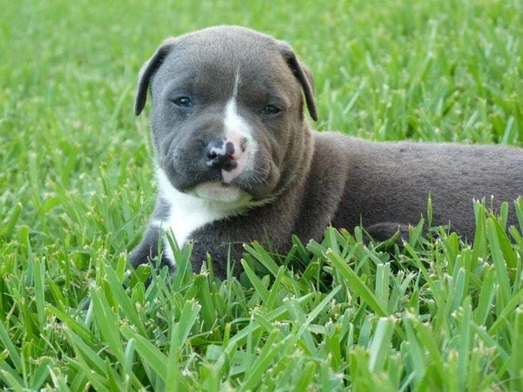
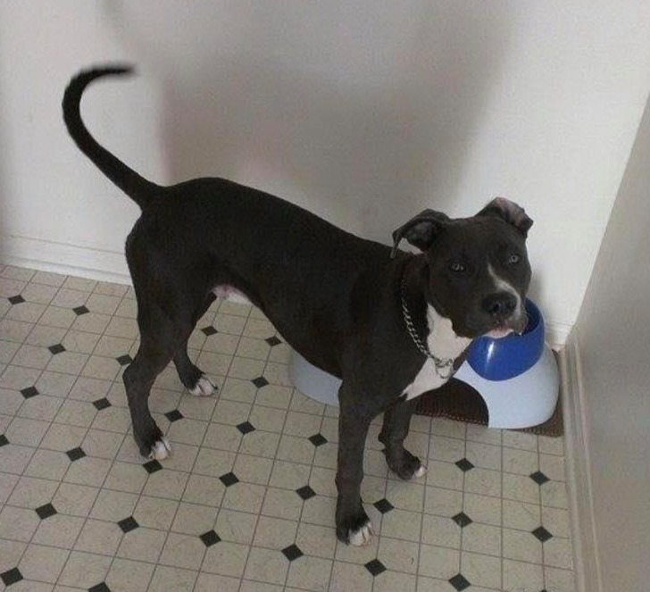
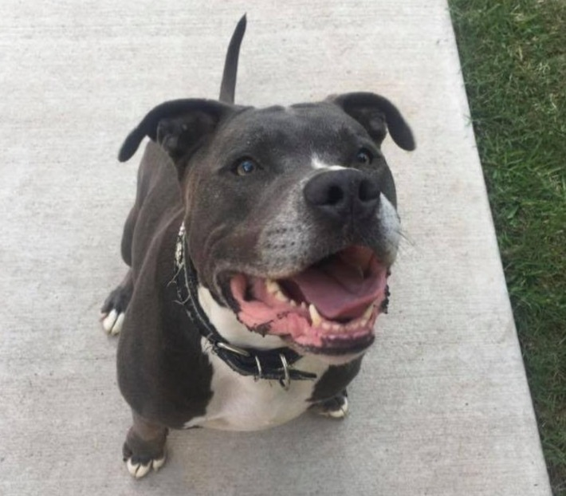
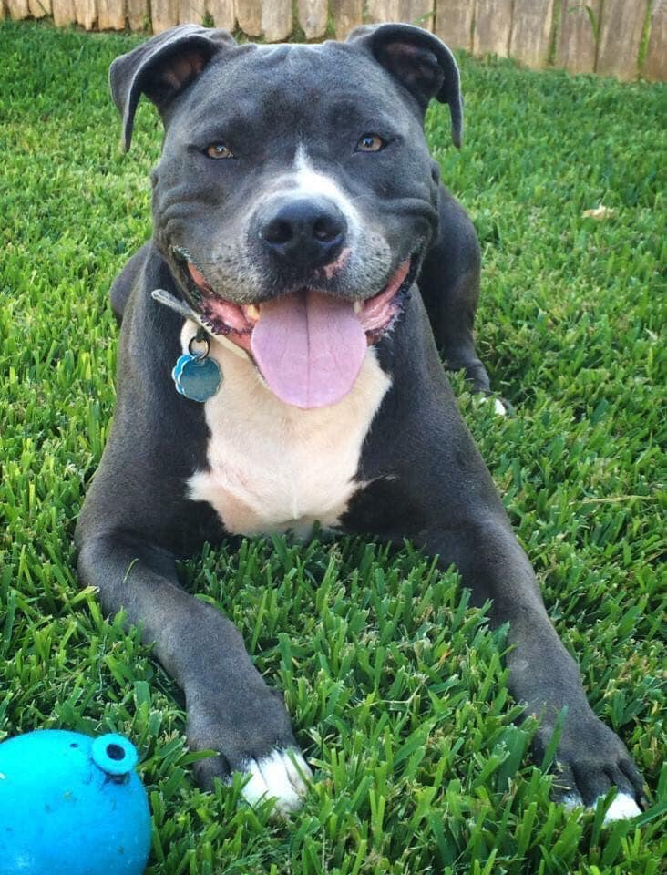

We would give anything to be able to hold and kiss him just one more time, but alas we know that his journey has just begun, and now we look back at what made our lovely Blue Bonnet, our love, BRONX
-

BRONX,
The life of this precious soul began on April 1, 2012. On May 5, 2012, he found his new home and changed our lives forever. We were on our way home from visiting family in the Rio Grande Valley when we noticed a family selling puppies on the side of the road. We decided to stop to see what kind of puppies they had. This was the first time we laid eyes on our Bronx, and he was the only gray puppy in the litter; the rest were white with specs of gray. It was love at first sight, but we had no intention of getting a new dog, so we got back into the car and continued our journey back home. The beauty of fate did not let us get very far before realizing we needed to go back to see him once more. When we arrived again, another family was taking an interest in that gorgeous gray puppy. We knew we could not leave without him, so we immediately paid for the puppy and finally continued on home. This was the beginning of an 8-year journey with the most fantastic companion anyone could have ever asked for.
-

WE
Bronx once swallowed a toy heart which landed him at the vet. Unforutantly, due to the risks and price of the surgery, we felt we had no other option but to say goodbye and let him go peacefully. Mom and dad took him for his last walk around the vet hospital, in total shock and disbelief that this was about to happen. tears fell from their eyes as they realized what was about to happen. They took him back into the vet’s office to prepare for the euthanization. Just as the vet was about to inject the medication, something in my mom made her tell the vet to stop. My mom begged and pleaded that there had to be another way for Bronx to get help which led her to another vet hospital that would do the surgery for a much cheaper price. Bronx was dying but we still had some hope and faith to do whatever we needed to do for him. The surgery alone could’ve killed him but it turned out to be a success. The recovery time was long but we were blessed with the additional years with our sweet soul. The experience of almost losing him intensified our love way more than we could’ve ever imagined.
-

LOVE
Bronx was also very vocal and could communicate with us to tell us exactly what he wanted or what was on his mind. He had no problem using his loud voice to get his way with us. He had each of us in the palm of his hand. He enjoyed going on walks and bike rides as well as chasing his favorite frisbee out in the backyard. Bronx also enjoyed helping himself to our pantry every chance he could get. We’d find empty loaves of bread, empty cereal boxes, and all kinds of snacks in his kennel and the guilty look on his face was priceless every time. His favorite snacks were sour patch kids and watermelon. I miss the sound of him smacking his lips every time he tasted something delicious. I miss the messy way he would drink from his water bowl and then lay his wet mouth on my lap. I miss how his stink-bomb farts were bad enough to clear the entire room. One thing about Bronx is that he had no idea how much of a giant he truly was. He loved to plop his big ole behind in your lap and cuddle up as close as he possibly could. Bronx was just gorgeous from the inside out. He was breathtakingly handsome. He was just so sweet and pure. He loved to love and to be loved. We miss you everyday baby boy.
-

YOU
Our time with Bronx came to an end on July 8, 2020. We shared many hugs and kisses and savored every second of it. His last meal was his favorite, mcdonald’s cheeseburgers. The pain of losing our loved one will never fade, but the love and memories we had with him will be in our heart forever. Until we meet again, Rest in Paradise, Bronx.